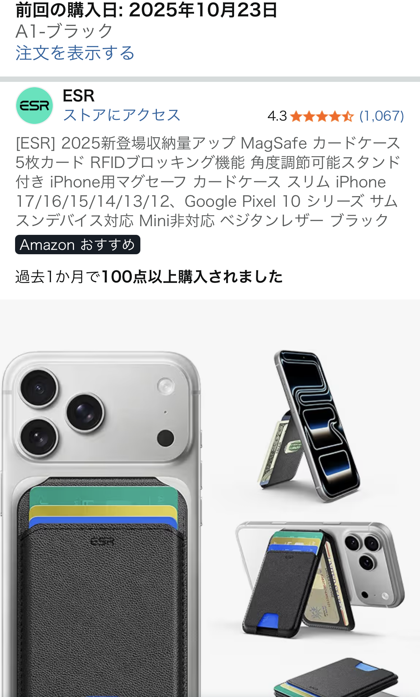

ESR MagSafe対応レザー風カードケースを実際に使って分かった魅力と注意点【財布を持ち歩きたくない人向け】

「できるだけ荷物を減らしたい」「財布を持ち歩かずに、スマホだけで完結させたい」という人にとって、 MagSafe対応のカードケースは、もはや必須級のガジェットになりつつあります。 ただ、Apple純正のファインウーブン素材は「質感のわりに強度が物足りない」という声も多く、乗り換え先を探している人も少なくありません。
そこで今回は、実際の口コミで星5評価を獲得している ESR製 MagSafe対応レザー風カードケース（A1-ブラック）を、 「Appleファインウーブンから乗り換えた」というリアルな体験談と一般的な使用感をもとに、 薄さ・収納力・耐久性・注意点までまとめてレビューします。
Appleファインウーブンから乗り換えて感じた「質感」と「安心感」の違い
口コミでは、もともとApple純正のファインウーブン素材を使っていたものの、 素材の強度に不満がありESRに乗り換えたという経緯が語られています。 ファインウーブンは環境配慮素材として話題になりましたが、実際には「毛羽立ちやすい」「擦れに弱い」といった声も多く、 毎日持ち歩くカードケースとしては心許ないと感じる人もいます。
一方、ESRのカードケースはレザー風の質感で、見た目も手触りも「きちんと感」があり、 ビジネスシーンでも違和感なく使えるのが大きなメリット。合皮系の素材ながら、表面のコーティングがしっかりしているため、 カバンの中で他のガジェットと擦れても、安っぽく傷だらけになる印象は少ないです。
ポケット3つでも「薄い」設計で、必要最低限をスマホに集約できる
このカードケースの特徴は、ポケットが3つあるのに薄さが保たれている点です。 口コミでは「もちろんポケット1つの方が薄いが、すぐ慣れる」と書かれており、 実際に使ってみると、以下のような構成で持ち歩くイメージがしっくりきます。
- 身分証（運転免許証など）×1枚
- クレジットカード×2枚
- 予備の千円札を1枚、折りたたんで収納
このセットを入れておくことで、ほぼ財布を持ち歩かなくて済む生活が実現します。 交通系ICやQR決済はスマホ本体で完結し、万が一の「電池切れ」や「読み取り不良」のときだけ、 カードケース内のクレカや現金を使うバックアップ構成にしておくと安心です。
ポケット3つ構成は、最初こそ「少し厚いかな？」と感じるかもしれませんが、 実際にはMagSafe対応ケースの上からでも違和感なく持てる厚みに収まっており、 ジーンズのポケットに入れても「ゴツゴツ感」が出にくいバランスに仕上がっています。
ESRというメーカーへの信頼感とMagSafeの吸着力
口コミでも触れられている通り、ESRはスマホケースや保護フィルムで有名なメーカーです。 Amazonでも長年多くのレビューを集めており、「コスパの良いアクセサリーメーカー」として認知されています。 そのため、無名ブランドのMagSafeカードケースと比べると、磁力の強さや仕上げの精度に安心感があるのがポイントです。
MagSafe対応iPhoneに装着したときの吸着力も十分で、通常の使用で勝手に外れる心配はほぼありません。 ただし、ツルツルした素材のケースや、MagSafe非対応ケースを併用している場合は、 磁力が弱く感じることもあるため、MagSafe対応ケースとの組み合わせで使うのが前提と考えた方が良いでしょう。
実際に使って分かったメリット
口コミと一般的な使用感を踏まえると、このESRカードケースのメリットは次のように整理できます。
- レザー風の質感が高く、ビジネスでも浮かないデザイン
- ポケット3つで「身分証＋クレカ2枚＋千円札」がちょうど収まる
- 財布を持ち歩かないミニマルな生活に移行しやすい
- ESRブランドの安心感があり、MagSafeの吸着力も十分
- 価格がApple純正より抑えめで、コスパが良い
特に「スマホ＋カードケースだけで外出したい」「キャッシュレス中心だけど、最低限の現金も持っておきたい」という人には、 非常にバランスの良い選択肢と言えます。
購入前に知っておきたい注意点・デメリット
一方で、完璧な製品というわけではなく、あらかじめ理解しておきたいポイントもあります。
- ポケット1つの極薄カードホルダーと比べると、どうしても厚みは増す
- カードを3枚フルに入れると、取り出し時に少しタイトに感じることがある
- MagSafeの特性上、激しい振動や衝撃が続く環境では外れる可能性はゼロではない
ただし、これらは「薄さ」よりも「実用的な収納力」を優先した結果とも言えます。 カードを2枚運用に抑えたり、千円札を薄く折りたたむなど、少し工夫するだけで使い勝手はかなり向上します。
こんな人にESR MagSafeカードケースをおすすめしたい
以上を踏まえると、このESRレザー風カードケースは次のような人に特におすすめです。
- Appleファインウーブンの耐久性に不満があり、乗り換え先を探している人
- 財布を持ち歩かず、スマホ中心のキャッシュレス生活に移行したい人
- 身分証とクレカ2枚、最低限の現金だけをスマートに持ち歩きたい人
- 無名ブランドではなく、実績のあるアクセサリーメーカー製を選びたい人
実際の口コミでも「基本的に財布を持ち歩かなくなります！」と書かれている通り、 日常の持ち物を減らしたいミニマリスト志向の人には、かなり刺さるガジェットです。 iPhoneの背面に必要最低限のライフラインを集約できる感覚は、一度慣れると手放せなくなります。
Apple純正からの乗り換え先や、初めてのMagSafeカードケースを探しているなら、 コスパと実用性のバランスが取れたESR MagSafe対応レザー風カードケースは有力候補になります。 気になる方は、口コミ評価もチェックしつつ、早めに在庫があるうちに押さえておくのがおすすめです。
ESR MagSafe対応カードケースの詳細・価格をAmazonでチェックする※上記リンクはAmazonアフィリエイトリンクを含みます。